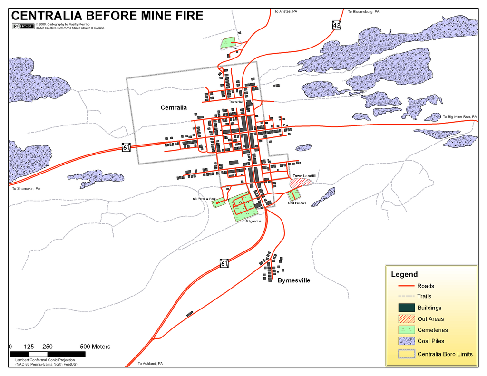
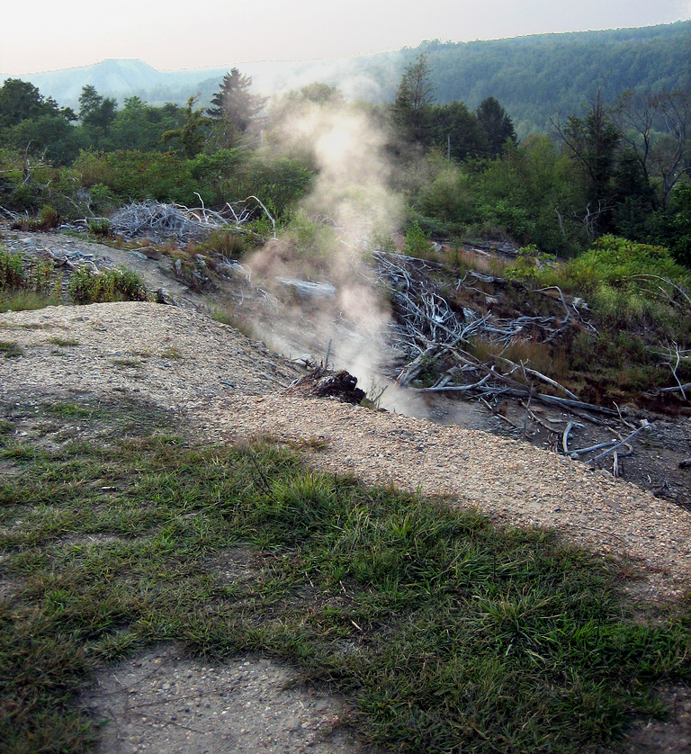

What is New Centralia
"New Centralia is an exciting development project aimed at revitalizing the area with modern infrastructure, green spaces, and a vibrant community. Our vision is to create a sustainable and thriving environment for all residents and businesses." - Jiaqi He, CEO of J&J Development
History of Centralia
Centralia, Pennsylvania, was once a bustling mining town founded in the mid-19th century, thriving on the anthracite coal industry. In May 1962, a landfill fire ignited an exposed coal mine, causing an underground mine fire that has burned ever since. The fire spread through a maze of abandoned coal mines beneath the town, releasing dangerous levels of toxic gases and creating hazardous sinkholes. Despite numerous attempts to extinguish it, the fire was uncontrollable. As the situation worsened, the government ordered the town's evacuation in the 1980s. Today, Centralia is nearly abandoned, with only a few residents remaining, and much of its infrastructure destroyed.
Our Goal
Our goal is to revitalize Centralia, transforming it into New Centralia—a safe, sustainable, and state-of-the-art smart city. The priority is to address the underground mine fire by controlling it, and ensuring the ground and air quality are safe for residents. Our infrastructure will include high-speed internet, IoT devices for efficient city management, smart grids for optimal energy distribution, and cutting-edge public transportation systems. New Centralia will also feature modern residential and commercial buildings with energy-efficient designs, and amenities that support a high quality of life.
Harnessing The Fire
The underground mine fire will be harnessed to create a "geothermal" power plant, generating cheap and relatively clean electricity. This geothermal plant will convert thermal energy into electricity by tapping into the consistent heat produced by the fire. This energy provides a cheap power source for the new city's infrastructure. From this, our residents will have the cheapest electricity in the nation.
Designing the City
While designing our city, we prioritized community over construction. Community Hub is at the center of every neighborhood, where people can ask for help or enjoy community events. Social spaces are built into neighborhoods. People share food through meal sharing and community gardens. Unwanted items are sent to neighborhood donation centers which anyone can take from. 65% of businesses must be local, promoting the welfare of our citizens over corporations.
Public Services
Centralia will offer comprehensive public services including healthcare, education, transportation, and emergency services focusing on fire rescue to ensure a high quality of life for all residents. We also provide many financial aid programs to the low-income community.
Sustainable Growth
If we want our citizens to live happy and healthy lives, we must promote sustainable growth. While building our city, we implemented the 17 United Nations Sustainable Development Goals. These are:
- No Poverty
- Zero Hunger
- Good Health and Well-Being
- Quality Education
- Gender Equality
- Clean Water and Sanitation
- Affordable and Clean Energy
- Decent Work and Economic Growth
- Industry, Innovation, and Infrastructure
- Reduced Inequalities
- Sustainable Cities and Communities
- Responsible Consumption and Production
- Climate Action
- Life Below Water
- Life on Land
- Peace, Justice, and Strong Institutions
- Partnerships For The Goals
Images of New Centralia